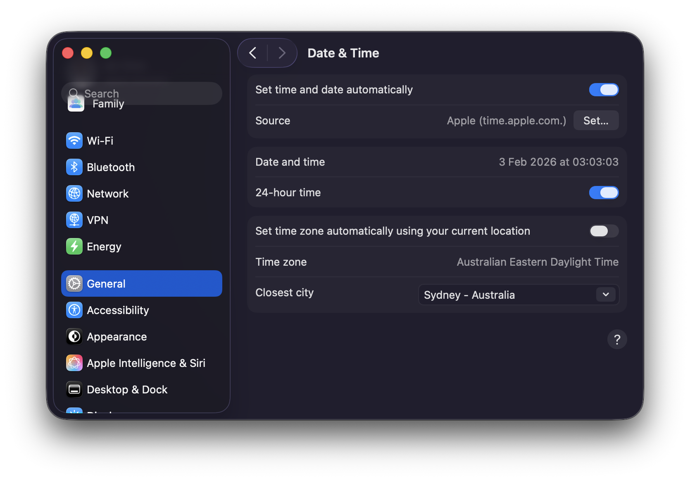

This article continues the Call Report curation example by showing how to use the Parquet files from R with DuckDB.
1 Using the data
1.1 Using the data with R
So what has the ffiec.pq package just done? In a nutshell, it have processed each of the nearly 100 zip files into seven Parquet files, and I discuss these in turn.
1.1.1 “Panel of Reporters” (POR) data
The first file is the “Panel of Reporters” (POR) table, which provides details on the financial institutions filing in the respective quarter.
To access the data using the ffiec.pq functions, we just need to create a connection to an in-memory DuckDB database, which is a simple one-liner.
From there we have the option to load a single Parquet file using the pq_file argument of the ffiec_scan_pqs() function:1
por_20250930 <- ffiec_scan_pqs(db, pq_file="por_20250930.parquet")
por_20250930 |>
select(IDRSSD, financial_institution_name, everything()) |>
head() |>
collect()
por_20250930 |> count() |> collect()But it will generally be more convenient to just read all files in one step, which we can do like this.
por <- ffiec_scan_pqs(db, "por")
por |>
select(IDRSSD, financial_institution_name, everything()) |>
head() |>
collect()
por |> count() |> collect()1.1.2 Item-schedules data
The second data set is ffiec_schedules. The zip files provided by the FFIEC Bulk Data site comprise several TSV files organized into “schedules” corresponding the particular forms on which the data are submitted by filers. While the ffiec.pq package reorganizes the data by data type, information about the original source files for the data are retained in ffiec_schedules. We can load this using the following code:
ffiec_schedules <- ffiec_scan_pqs(db, "ffiec_schedules")And here are the first 10 rows of this data set.
Focusing on one item, RIAD4230, we can see from the output below that this item was provided on both Schedule RI (ri) and Schedule RI-BII (ribii) from 2001-03-31 until 2018-12-31, but since then has only been provided on Schedule RI-BII.
The next question might be: What is RIAD4230? We can get the answer from ffiec_items, a data set included with the ffiec.pq package:
ffiec_items |> filter(item == "RIAD4230")Schedule RI is the income statement and “Provision for loan and lease losses” is an expense we would expect to see there for a financial institution. Schedule RI-BII is “Charge-offs and Recoveries on Loans and Leases” and provides detail on loan charge-offs and recoveries, broken out by loan category, for the reporting period. As part of processing the data, the ffiec.pq package confirms that the value for any given item for a specific IDRSSD and date is the same across schedules for all items in the data.
Each of the other five files represents data from the schedules for that quarter for a particular data type, as shown in Table 1:
| Key | Arrow type | Access code |
|---|---|---|
| float | Float64 | ffiec_scan_pqs(db, "ffiec_float") |
| int | Int32 | ffiec_scan_pqs(db, "ffiec_int") |
| str | Utf8 | ffiec_scan_pqs(db, "ffiec_str") |
| date | Date32 | ffiec_scan_pqs(db, "ffiec_date") |
| bool | Boolean | ffiec_scan_pqs(db, "ffiec_bool") |
We can use the data set ffiec_items to find out where a variable is located, based on its Arrow type.
ffiec_itemsAs might be expected, most variables have type Float64 and will be found in the ffiec_float tables.
ffiec_items |> count(data_type, sort = TRUE)1.1.3 Example 1: Do bank balance sheets balance?
If we were experts in Call Report data, we might know that domestic total assets is reported as item RCFD2170 (on Schedule RC) for banks reporting on a consolidated basis and as item RCON2170 for banks reporting on an unconsolidated basis. We might also know about RCFD2948 and RCFD3210 and so on. But we don’t need to be experts to see what these items relate to:
The output above suggests we can make a “top level” balance sheet table using these items. The following code uses the DuckDB instance we created above (db) and the code provided in Table 1, to create ffiec_float, a “lazy” data table. Here “lazy” is a good thing, as it means we have access to all the data without having to load anything into RAM. As a result, this operation takes almost no time.
ffiec_float <- ffiec_scan_pqs(db, "ffiec_float") |> system_time()
ffiec_floatAs can be seen, the data in ffiec_float are in a long format, with each item for each bank for each period being a single row.
I then filter() to get data on just the items in bs_items and then use the the convenience function ffiec_pivot() from the ffiec.pq package to turn the data into a more customary wide form. I then use coalesce() to get the consolidated items (RCFD) where available and the unconsolidated items (RCON) otherwise. Because I compute() this table (i.e., actually calculate the values for each row and column), this step takes a relatively long time, but not too long given that the underlying data files are in the order of tens of gigabytes if loaded in RAM.2
bs_data <-
ffiec_float |>
ffiec_pivot(items = bs_items) |>
mutate(total_assets = coalesce(RCFD2170, RCON2170),
total_liabilities = coalesce(RCFD2948, RCON2948),
equity = coalesce(RCFD3210, RCON3210),
nci = coalesce(RCFD3000, RCON3000)) |>
mutate(eq_liab = total_liabilities + equity + nci) |>
compute() |>
system_time()So, do balance sheets balance? Well, not always.3
What’s going on? Well, one possibility is simply rounding error. So in the following code, I set imbalance_flag to TRUE only if the gap is more than 1 (these are in thousands of USD).
balanced <-
bs_data |>
mutate(imbalance = total_assets - eq_liab,
imbalance_flag = abs(total_assets - eq_liab) > 1) |>
select(-starts_with("RC"), -total_liabilities) |>
collect()This helps a lot. Now it seems that balance sheets usually balance, but not always.
balanced |>
count(imbalance_flag)The vast majority of apparent imbalances are small …
… and they’re all at least twenty years ago.
1.1.4 Example 2: When do banks submit their Call Reports?
Working with dates and times (temporal data) can be a lot more complicated than is generally appreciated. Broadly speaking we might think of temporal data as referring to points in time, or instants, or to time spans, which include durations, periods, and intervals.4 Instants might refer to moments in time (e.g., in UTC) or as times of day (in local time).
Suppose I were interested in understanding the times of day at which financial institutions submit their Call Reports. It seems that financial institutions file Call Reports with their primary federal regulator through the FFIEC’s Central Data Repository. So I am going to use the America/New_York time zone as the relevant local time zone for this analysis, as the FFIEC is based in Washington, DC.
To illustrate some subtleties of working with time zones, I will set my computer to a different time zone from that applicable to where I am: Australia/Sydney, as seen in Figure 1.5

Now, R sees my time zone as Australia/Sydney:
If we look at the underlying zip file for 2025-09-30, you will see that last_date_time_submission_updated_on for the bank with IDRSSD of 37 is "2026-01-13T10:13:21". In creating the ffiec.pq package, I assumed that this is a timestamp in America/New_York time.
How does that show up when I look at the processed data in R using DuckDB?
db <- dbConnect(duckdb::duckdb())
por <- ffiec_scan_pqs(db, "por")
por_default <-
por |>
filter(IDRSSD == 37, date == "2025-09-30") |>
rename(dttm = last_date_time_submission_updated_on) |>
mutate(dttm_text = as.character(dttm)) |>
select(IDRSSD, date, dttm, dttm_text) |>
collect()
dbDisconnect(db)
por_default
por_default$dttm[1]By default, R/DuckDB is showing this to me as UTC. This is fine, but I want to analyse this as a local time. Here is how I can achieve this. First, I set the R variable tz to "America/New_York".
tz <- "America/New_York"Second, I connect to DuckDB anew, but I tell it I want it to use "America/New_York" as the time zone of output. But it’s important to note that this is just a “presentation layer” and doesn’t change how the database itself “thinks about” timestamps.
Third, I make DuckDB a “time zone wizard” but installing and loading the icu extension. This extension enables region-dependent collations and time zones. The icu extension is probably not installed and enabled by default because it is large and not all applications need these features. This allows me to set the DuckDB server’s time zone to America/New_York.
Then I run the query from above again.
por <- ffiec_scan_pqs(db, "por")
por_ny <-
por |>
filter(IDRSSD == 37, date == "2025-09-30") |>
rename(dttm = last_date_time_submission_updated_on) |>
mutate(dttm_text = as.character(dttm)) |>
select(IDRSSD, date, dttm, dttm_text) |>
collect()
por_ny
por_ny$dttm[1]Now, we see that everything is in America/New_York local time, including the way the server sees the data (dttm_text) and how it’s presented to the R user.
Now that we have things working in local time, I will make a couple of plots of submission times. To show times on a single scale, I use the fudge of making them all times on a given day, which I somewhat arbitrarily choose to be 2025-01-01.6
The first plotting example presents submission times divided by whether banks are located in “western states” or not. It does seem that western banks file later.
western_states <- c("HI", "WA", "CA", "AK", "OR", "NV")
plot_data <-
por |>
rename(last_update = last_date_time_submission_updated_on) |>
mutate(
q4 = quarter(date) == 4,
offset = last_update - sql("last_update AT TIME ZONE 'UTC'"),
offset = date_part("epoch", offset) / 3600,
tzone = if_else(offset == -4, "EDT", "EST"),
west = financial_institution_state %in% western_states,
ref = sql(str_glue("TIMESTAMPTZ '2025-01-01 00:00:00 {tz}'")),
sub_date = date_trunc('days', last_update)) |>
mutate(time_adj = last_update - sub_date + ref) |>
select(IDRSSD, date, last_update, time_adj, west, q4, offset, tzone) |>
collect()The second plotting example presents submission times divided by whether America/New_York is on Eastern Daylight Time (EDT) or Eastern Standard Time (EST). Looking at the plot, it seems that submission times have a similar distribution across the two time zones, suggesting that banks do not follow UTC, in which case there should be a difference in distributions for EDT and EST.
One can definitely see a “lunch hour” and the submissions appear more likely to involve someone clicking a “Submit” button in some software package rather than IT setting up some overnight automated submission.